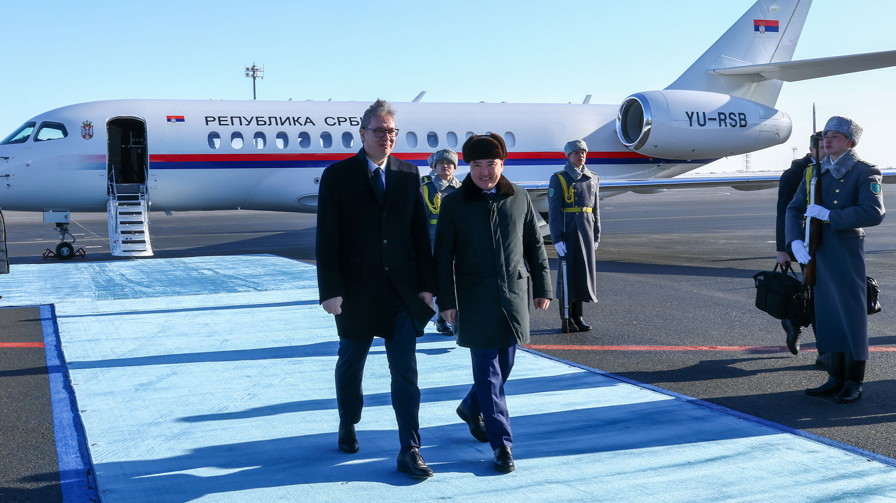

O‘zbekiston va Serbiya strategik sheriklik o‘rnatdi: Belgradda 20 ta hujjat imzolandi
Mirziyoyevning Belgradga birinchi tashrifi yakunida qo‘shma deklaratsiya imzolandi. Tomonlar erkin savdo bitimi bo‘yicha muzokara boshlash, Belgrad–Toshkent to‘g‘ridan-to‘g‘ri aviaqatnovini yo‘lga qo‘yish va O‘rta yo‘lakni qo‘llab-quvvatlashga kelishdi.

2026-yil 8-sentabr kuni Belgradda O‘zbekiston Prezidenti Shavkat Mirziyoyev va Serbiya Prezidenti Aleksandar Vuchich muzokara olib bordi. Uchrashuv yakunida ikki davlat o‘rtasida strategik sheriklik munosabatlari o‘rnatilishi to‘g‘risidagi Qo‘shma deklaratsiya imzolandi.
Bu — O‘zbekiston Prezidentining Serbiyaga birinchi rasmiy tashrifi. Tashrif haqida Toshkent 5-sentabr kuni e’lon qilgan edi.
Bugun biz Serbiya va O‘zbekiston o‘rtasida strategik sheriklik o‘rnatish bo‘yicha tarixiy qaror qabul qildik. Bu yana bir bor ushbu tashrif tarixiy ekanini va biz tarixiy qaror qabul qilganimizni ko‘rsatadi.
— Shavkat Mirziyoyev, O‘zbekiston Prezidenti (Euronews tarjimasidan, 08.09.2026)
Nima imzolandi
Tomonlar 20 ta ikki tomonlama hujjatni imzoladi. Ular savdo, transport, energetika, raqamlashtirish va mehnat migratsiyasi sohalarini qamrab oladi. Gazeta.uz ma’lumotiga ko‘ra, hujjatlar 18 ta yo‘nalishni o‘z ichiga oladi.
- Qishloq xo‘jaligi, suv xo‘jaligi va barqaror qishloq taraqqiyoti
- Turizm va madaniy almashinuv
- Qayta tiklanuvchi energiya va yashil texnologiyalar
- Temir yo‘l infratuzilmasi va O‘rta yo‘lak
- Erkin savdo bitimi bo‘yicha muzokaralar
- Mehnat migratsiyasi va avtomobil transporti
- Farmatsevtika va biotexnologiya
- Raqamlashtirish va elektron hukumat
- Atrof-muhitni muhofaza qilish
Alohida hujjat bilan 2026–2028-yillarga mo‘ljallangan sanoat kooperatsiyasi bo‘yicha harakatlar rejasi tasdiqlandi. Samarqand viloyati va Serbiyaning Voyevodina avtonom o‘lkasi o‘rtasida sheriklik munosabatlari o‘rnatildi.
Raqamlarda
- Imzolangan hujjatlar: 20 ta
- Qamrab olingan yo‘nalishlar: 18 ta
- O‘tgan yilgi savdo hajmi: 41,9 mln dollar (rekord)
- 2024-yil savdo hajmi: 32,9 mln dollar
- Yillik o‘sish: +27%
- Serbiya qishloq xo‘jaligi eksporti (2026, 7 oy): +54,1%
- Sanoat kooperatsiyasi rejasi: 2026–2028-yillar
Ikki davlat o‘rtasidagi savdo aylanmasi o‘tgan yili 41,9 million dollarni tashkil etdi — bu rekord ko‘rsatkich. 2024-yilda bu raqam 32,9 million dollar edi, ya’ni o‘sish 27 foizni tashkil qiladi. 2026-yilning birinchi yetti oyida Serbiyaning O‘zbekistonga qishloq xo‘jaligi va oziq-ovqat mahsulotlari eksporti 54,1 foizga oshdi.
Shunga qaramay, mutlaq ko‘rsatkichlar bo‘yicha savdo hajmi hozircha kichik: O‘zbekistonning umumiy tashqi savdo aylanamasida Serbiya ulushi bir foizdan ancha past.
Erkin savdo va aviaqatnov
Serbiya Prezidenti Aleksandar Vuchich tomonlar erkin savdo bitimi tuzish yo‘lidan borishini va Belgrad bilan Toshkent o‘rtasida to‘g‘ridan-to‘g‘ri aviaqatnovni yo‘lga qo‘yishni istashini bildirdi. Hozirda ikki poytaxt o‘rtasida to‘g‘ridan-to‘g‘ri reyslar yo‘q; yo‘lovchilar Istanbul, Dubay yoki Yevropa shaharlari orqali uchadi.
O‘zbekiston hozirda Yevroosiyo iqtisodiy ittifoqida kuzatuvchi maqomiga ega va Jahon savdo tashkilotiga a’zo bo‘lish jarayonini olib bormoqda. Serbiya bilan erkin savdo bitimi — Toshkentning Yevropa yo‘nalishidagi savdo tarmog‘ini kengaytirish urinishlaridan biri.
O‘rta yo‘lak
Tomonlar O‘rta yo‘lakni — Markaziy Osiyoni Kaspiy dengizi, Ozarbayjon, Gruziya va Turkiya orqali Yevropa bilan bog‘lovchi trans-Kaspiy savdo yo‘lini qo‘llab-quvvatlash to‘g‘risidagi hujjatlarni imzoladi.
O‘rta yo‘lak so‘nggi yillarda Markaziy Osiyo davlatlari uchun ustuvor yo‘nalishga aylandi: Rossiya hududi orqali o‘tuvchi an’anaviy yo‘nalishlarga sanksiya rejimi va logistika cheklovlari ta’sir ko‘rsatgan. O‘zbekiston dengizga chiqish imkoniga ega bo‘lmagan davlat bo‘lgani uchun alternativ yo‘nalishlar masalasi u uchun tizimli ahamiyatga ega.
Mehnat migratsiyasi
Imzolangan hujjatlar orasida mehnat migratsiyasiga oid bitim ham bor. Serbiya so‘nggi yillarda infratuzilma va qurilish loyihalari uchun chet ellik ishchi kuchini jalb qilmoqda.
O‘zbekiston uchun bu yo‘nalish alohida ahamiyatga ega: Rossiyadagi migratsiya siyosati keskinlashuvi fonida Toshkent mehnat migratsiyasi yo‘nalishlarini diversifikatsiya qilishga harakat qilmoqda. Sentabr oyi boshida Migratsiya agentligi o‘n kun ichida Rossiyadan 96 415 fuqaro qaytganini ma’lum qilgan edi.
Ramziy tadbirlar
Aleksandar Vuchich Shavkat Mirziyoyevga Serbiyaning eng yuqori davlat mukofoti — Katta zanjirli Serbiya Respublikasi ordenini topshirdi. Ikki davlat rahbari Belgradda bir ko‘chaga Toshkent nomi berilishi marosimida ishtirok etdi.
Kontekst
Tashrif qanday tashkil etildi
O‘zbekiston Prezidenti matbuot xizmati tashrif haqidagi xabarni 5-sentabr kuni e’lon qildi. 8-sentabr kuni Belgradda rasmiy kutib olish marosimi o‘tkazildi, so‘ngra tor va kengaytirilgan tarkibdagi muzokaralar bo‘lib o‘tdi. Muzokaralar yakunida hujjatlar almashinuvi marosimi va matbuotga qo‘shma bayonot tashkil etildi.
Tashrif doirasida ikki davlat tadbirkorlari ishtirokida biznes-forum ham o‘tkazildi. Unda qishloq xo‘jaligi, oziq-ovqat sanoati, farmatsevtika va qurilish materiallari ishlab chiqarish yo‘nalishlaridagi loyihalar muhokama qilindi.
Ikki davlat munosabatlari tarixi
O‘zbekiston va Serbiya o‘rtasida diplomatik munosabatlar 1990-yillarning ikkinchi yarmida o‘rnatilgan. Uzoq vaqt davomida aloqalar asosan xalqaro tashkilotlar doirasida cheklangan darajada olib borilgan; ikki davlat poytaxtlarida elchixonalar nisbatan yaqinda ochilgan.
So‘nggi yillarda aloqalar jadallashdi. 2025-yilda savdo aylanmasi rekord darajaga — 41,9 million dollarga yetdi. Serbiya O‘zbekistonga asosan oziq-ovqat mahsulotlari, farmatsevtika va mashinasozlik mahsulotlarini eksport qiladi; O‘zbekiston esa to‘qimachilik va qishloq xo‘jaligi mahsulotlarini yetkazib beradi.
Voyevodina va Samarqand
Samarqand viloyati va Serbiyaning Voyevodina avtonom o‘lkasi o‘rtasida sheriklik munosabatlari o‘rnatilishi tashrifning amaliy natijalaridan biri bo‘ldi. Voyevodina Serbiyaning asosiy qishloq xo‘jaligi mintaqasi hisoblanadi; Samarqand viloyati esa O‘zbekistonda meva-sabzavot yetishtirish va qayta ishlash bo‘yicha yirik hududlardan biri.
Mintaqalararo sheriklik odatda qishloq xo‘jaligi texnologiyalari almashinuvi, urug‘chilik, sug‘orish tizimlari va qayta ishlash korxonalari bo‘yicha hamkorlikni nazarda tutadi. Aniq loyihalar ro‘yxati e’lon qilinmagan.
Yevropa yo‘nalishi
Serbiya bilan strategik sheriklik O‘zbekistonning Yevropa yo‘nalishidagi diplomatiyasining bir qismi hisoblanadi. Toshkent 2021-yildan buyon Yevropa Ittifoqining GSP+ imtiyozli savdo rejimidan foydalanadi — bu rejim O‘zbekiston mahsulotlarining katta qismiga Yevropa Ittifoqi bozoriga bojsiz kirish imkonini beradi.
Serbiya Yevropa Ittifoqiga a’zolikka nomzod davlat, ammo hozircha ittifoq tarkibiga kirmagan. Shu sababli ikki davlat o‘rtasidagi erkin savdo bitimi Yevropa Ittifoqi qoidalaridan alohida tuzilishi mumkin.
Serbiya Yevropa Ittifoqiga a’zolikka nomzod davlat, ayni paytda Rossiya va Xitoy bilan ham iqtisodiy aloqalarni saqlab kelmoqda. Vuchich 2026-yil fevral oyida Qozog‘istonga rasmiy tashrif buyurgan edi — ya’ni Belgradning Markaziy Osiyo yo‘nalishidagi faolligi shu yil davomida ortdi.
O‘zbekiston uchun tashrif sentabr oyidagi zich diplomatik jadvalning bir qismi bo‘ldi. 1-sentabr kuni Mirziyoyev Bishkekda ShHT sammitida qatnashdi, 13–16-sentabr kunlari esa Janubiy Koreyaga davlat tashrifi bilan bordi va Seulda birinchi Koreya–Markaziy Osiyo sammitida ishtirok etdi.
Qo‘shma deklaratsiya strategik sheriklik maqomini belgilaydi, biroq u xalqaro shartnoma emas va ratifikatsiya talab qilmaydi. Erkin savdo bitimi bo‘yicha muzokaralar esa alohida jarayon bo‘lib, uning muddatlari e’lon qilinmagan.